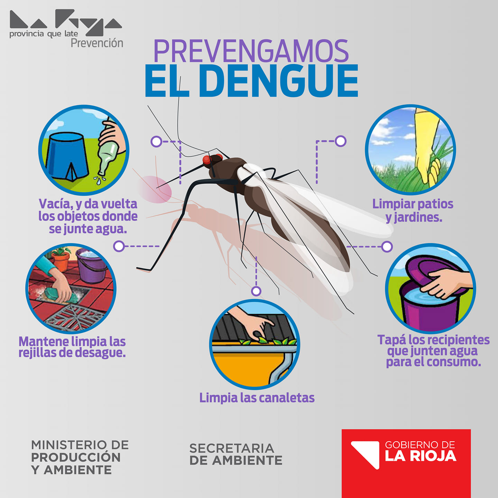
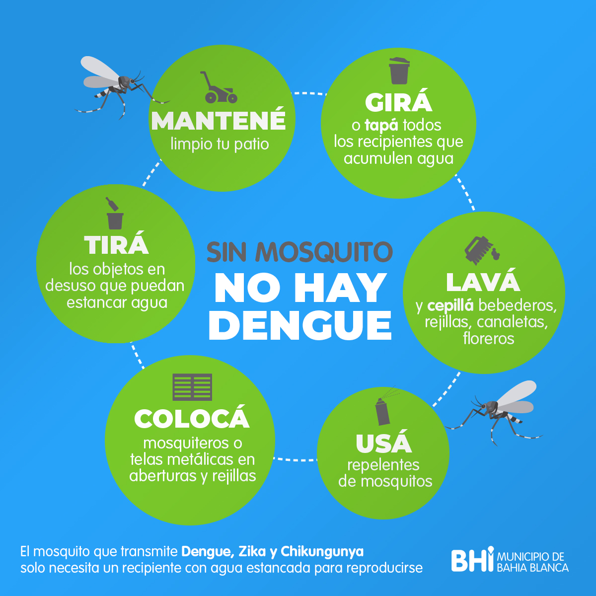

- 


- 
Prevención del Dengue
El dengue es una enfermedad viral transmitida por mosquitos que puede ser grave e incluso mortal.
Para prevenir el dengue se deben evitar los depósitos de agua que sirven de criadero para los mosquitos con el fin de disminuir la reproducción de los mismos. Para esto se debe:
-
1. Cambiar frecuentemente el agua de los bebederos de animales y de los floreros.
2. Tapar los recipientes con agua, eliminar la basura acumulada en patios y áreas al aire libre, eliminar llantas o almacenamiento en sitios cerrados.
3. Utilizar repelentes en las áreas del cuerpo que están descubiertas.
4. Usar ropa adecuada camisas de manga larga y pantalones largos.
5. Usar mosquiteros o toldillos en las camas, sobre todo cuando hay pacientes enfermos para evitar que infecten nuevos mosquitos o en los lugares donde duermen los niños.
6. Lavar y cepillar tanques y albercas.